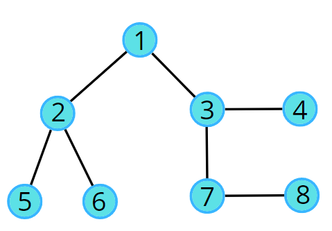
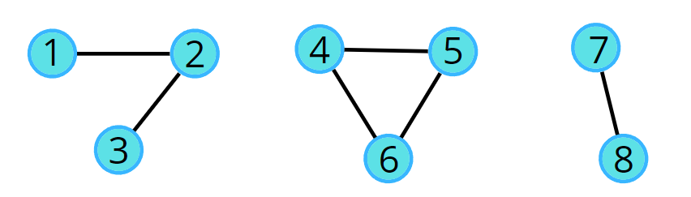
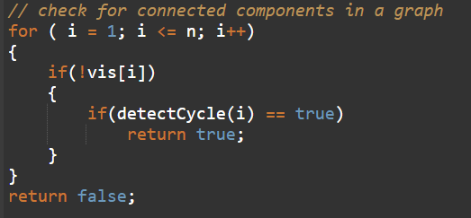
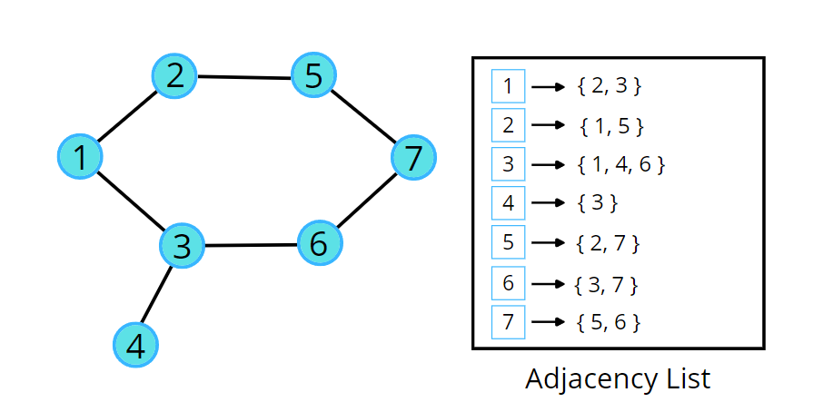
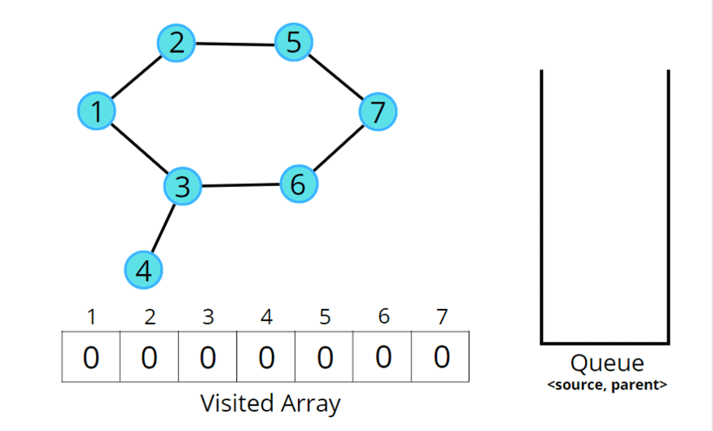

Detect Cycle in an Undirected Graph (using BFS)
Problem Statement: Given an undirected graph with V vertices and E edges, check whether it contains any cycle or not.
Examples:
Example 1: Input: V = 8, E = 7
Output: 0 Explanation: No cycle in the given graph.
Example 2: Input: V = 8, E = 6
Output: 1 Explanation: 4->5->6->4 is a cycle.
Solution
Disclaimer: Don't jump directly to the solution, try it out yourself first.
Intuition:
The cycle in a graph starts from a node and ends at the same node. So we can think of two algorithms to do this, in this article we will be reading about the BFS, and in the next, we will be learning how to use DFS to check.
Breadth First Search, BFS is a traversal technique where we visit the nodes level-wise, i.e., it visits the same level nodes simultaneously, and then moves to the next level.
The intuition is that we start from a node, and start doing BFS level-wise, if somewhere down the line, we visit a single node twice, it means we came via two paths to end up at the same node. It implies there is a cycle in the graph because we know that we start from different directions but can arrive at the same node only if the graph is connected or contains a cycle, otherwise we would never come to the same node again.
Approach:
Initial configuration:
- Queue: Define a queue and insert the source node along with parent data (<source node, parent>). For example, (2, 1) means 2 is the source node and 1 is its parent node.
- Visited array: an array initialized to 0 indicating unvisited nodes.
The algorithm steps are as follows:
- For BFS traversal, we need a queue data structure and a visited array.
- Push the pair of the source node and its parent data (<source, parent>) in the queue, and mark the node as visited. The parent will be needed so that we don’t do a backward traversal in the graph, we just move frontwards.
- Start the BFS traversal, pop out an element from the queue every time and travel to all its unvisited neighbors using an adjacency list.
- Repeat the steps either until the queue becomes empty, or a node appears to be already visited which is not the parent, even though we traveled in different directions during the traversal, indicating there is a cycle.
- If the queue becomes empty and no such node is found then there is no cycle in the graph.
A graph can have connected components as well. In such cases, if any component forms a cycle then the graph is said to have a cycle. We can follow the algorithm for the same:

Consider the following graph and its adjacency list.

Consider the following illustration to understand the process of detecting a cycle using BFS traversal.

Code:
#include <bits/stdc++.h>
using namespace std;
class Solution {
private:
bool detect(int src, vector<int> adj[], int vis[]) {
vis[src] = 1;
// store <source node, parent node>
queue<pair<int,int>> q;
q.push({src, -1});
// traverse until queue is not empty
while(!q.empty()) {
int node = q.front().first;
int parent = q.front().second;
q.pop();
// go to all adjacent nodes
for(auto adjacentNode: adj[node]) {
// if adjacent node is unvisited
if(!vis[adjacentNode]) {
vis[adjacentNode] = 1;
q.push({adjacentNode, node});
}
// if adjacent node is visited and is not it's own parent node
else if(parent != adjacentNode) {
// yes it is a cycle
return true;
}
}
}
// there's no cycle
return false;
}
public:
// Function to detect cycle in an undirected graph.
bool isCycle(int V, vector<int> adj[]) {
// initialise them as unvisited
int vis[V] = {0};
for(int i = 0;i<V;i++) {
if(!vis[i]) {
if(detect(i, adj, vis)) return true;
}
}
return false;
}
};
int main() {
// V = 4, E = 2
vector<int> adj[4] = {{}, {2}, {1, 3}, {2}};
Solution obj;
bool ans = obj.isCycle(4, adj);
if (ans)
cout << "1\n";
else
cout << "0\n";
return 0;
}
Output: 0
Time Complexity: O(N + 2E) + O(N), Where N = Nodes, 2E is for total degrees as we traverse all adjacent nodes. In the case of connected components of a graph, it will take another O(N) time.
Space Complexity: O(N) + O(N) ~ O(N), Space for queue data structure and visited array.
Special thanks to Vanshika Singh Gour for contributing to this article on takeUforward. If you also wish to share your knowledge with the takeUforward fam, please check out this article. If you want to suggest any improvement/correction in this article please mail us at write4tuf@gmail.com